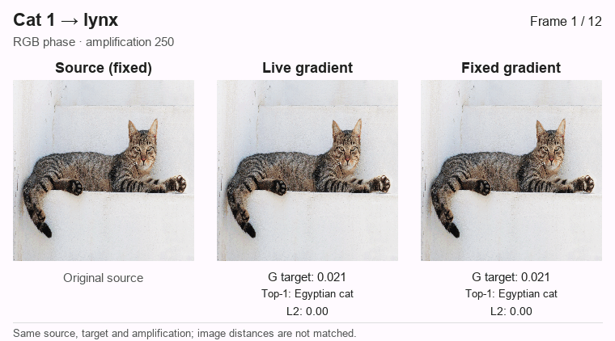
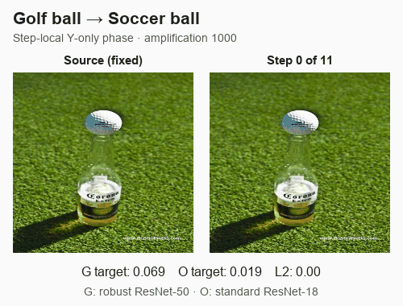
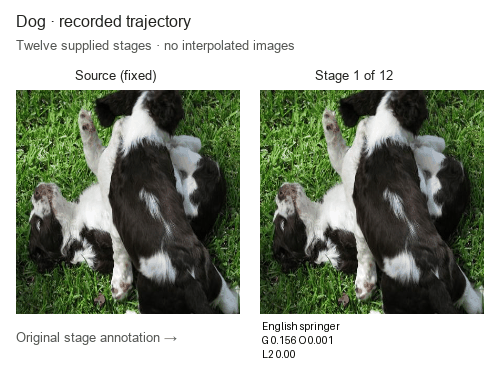

ImageNet: qualitative exploration
These selected trajectories revisit a few source images; they do not estimate broad ImageNet performance.
Recompute the gradient, or keep it fixed?
Compare live and fixed gradients on ten examples: cats toward lynx, fox, flamingo, leopard, and tiger, plus a golf ball toward a soccer ball. Live recomputes the gradient at every step; fixed computes it once at the source. Choose an example to watch both paths in one synchronized animation.
Cat → lynx

↔ Swipe the figure to compare source, live, and fixed.


Reproduction details and comparison scope
The live paths were verified against the original results: all 108 cat image panels match exactly, and the golf sequence matches its saved arrays and scores. The first nonzero live and fixed edits also match for every pair. The comparisons show actual computed states and target probabilities; no in-between images are interpolated. Amplification is held equal within each pair, while the resulting image distances can differ. These amplification values are distinct from the phase caps used in the interactive reference examples.
Trajectories grouped by source
Amplification is a step parameter, not an image-distance budget. Equal amplification does not imply equal image change. RGB and Y-only interventions use different protocols and should not be pooled into a method ranking. The comparisons above match source, target, amplification, model and transform, but not resulting L₂ distance. A claim of superiority would require distance matching or another prespecified criterion.
Cat on ledge
RGB phase · live gradients.
Cat → lynx
amp 250

Standing cat
RGB phase · live gradients; targets and amplification vary.
Cat → red fox
amp 250

Cat → kit fox
amp 120

Cat → lynx
amp 250

Seated cat
RGB phase · live gradients. The flamingo attempt at amplification 30 fails to reach the target prediction (final G prediction: ruffed grouse). At 60 and 1000, increasing target scores accompany visually ambiguous changes; the 1000 setting strongly distorts the source.
Cat → flamingo
amp 30

Cat → flamingo
amp 60

Cat → flamingo
amp 1000

Cat → leopard
amp 250

Cat → tiger
amp 1000

Golf ball
Y-only phase · live gradients, amplification 1000; chroma held fixed.
Golf ball → Soccer ball
amplification 1000


Cat close-up
Y-only phase · live gradients, amplification 120; intended target English springer.
Cat · close-up trajectory


Dog close-up 1
Y-only phase · live gradients; compare amplification 120 and 1000 on this same source.
Dog · close-up 1
Amplification 120


Dog · close-up 1
Amplification 1000


Dog close-up 2
Y-only phase · live gradients, amplification 1000. Strong distortion makes visual interpretation ambiguous.
Dog · close-up 2
Amplification 1000


Dog close-up 3
Y-only phase · live gradients; compare amplification 120 and 1000 on this same source.
Dog · close-up 3
Amplification 120


Dog · close-up 3
Amplification 1000


Additional supplied dog sequence
Exploratory strip with incomplete protocol metadata. Intended target, amplification and full settings are unverified; exclude this example from protocol comparisons.
Dog · recorded trajectory
